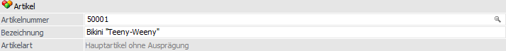

Im Register "Stamm", welches sich in zwei Unterregister unterteilt, können die Grundstammdaten des Artikels erfasst werden. Hierzu zählen u.a. die Bereiche "Suche / Selektion", "Atlas / Intrastat" und "Ausprägungsoptionen".

Das Register in die folgenden Unterregister unterteilt, welche in den nachfolgenden Kapiteln beschrieben werden:
ü Unterregister "Allgemein"
In dem
Unterregister "Allgemein" können u.a. die Daten für die Bereiche "Suche /
Selektion", "Lagerort" und "Atlas / Intrastat" hinterlegt werden.
ü Unterregister "Erweitert"
In dem
Unterregister "Erweitert" werden allgemeine Informationen des Artikels
dargestellt. Zusätzlich können die Grundeinstellungen für Ausprägungen definiert
werden.
Der Bereich "Artikel" ist unabhängig von dem gewählten Unterregister und steht immer zur Verfügung.
Artikel

Ø Artikelnummer
An dieser Stelle wird die Artikelnummer des Artikels eingetragen. Diese ist max. 30stellig und alphanumerisch.
Achtung
Die Sonderzeichen % (Prozentzeichen), *, ‘ (Minutenzeichen), &, " (Zoll), ' (einfaches Hochkomma) und + dürfen in der Artikelnummer nicht verwendet werden.
Hinweis
Werden Ausprägungen bzw. Ident- oder Chargennummern verwendet, dann sollten nicht mehr als 20 Stellen für die eigentliche Artikelnummer verwendet werden.
Die restlichen 10 Stellen werden dann für den Aufbau der internen Artikelnummer in Anspruch genommen, um für jede Ausprägung, Seriennummer und Charge eine eigene Artikelnummer zusammenzusetzen, damit z.B. eigene Preise, Lagerwerte und Texte für die einzelnen Ausprägungen verwaltet werden können.
Ø Neu
Dieses Symbol wird nur angezeigt, wenn in den FAKT-Parametern (WinLine START - Parameter - Applikations-Parameter - FAKT-Parameter - Artikel - Erweiterte Optionen) die Option "Matchcode nach Eingabe" aktiviert ist.
Durch Anwahl dieses Buttons kann das automatische Öffnen des Matchcodes, für die Neuanlage von Artikeln, ausgeschaltet werden.
Nachdem die Neuanlage der Artikel durchgeführt wurde kann durch nochmalige Anwahl des Buttons "Neu" das automatische Öffnen des Matchcodes im Artikelstamm wieder aktiviert werden.
Beispiel
Im Artikelstamm gibt es bereits die Artikelnummer "MB4635" und zusätzlich soll der Artikel "MB463" angelegt werden. Dies ist allerdings nicht möglich, da der automatsche Matchcode bei der Eingabe von "MB463" sofort den Artikel "MB4635" aufruft.
Wird nun der Button "Neu" gedrückt und anschließend im Feld "Artikelnummer" die Nummer "MB463" eingetragen, dann wird nicht im Hintergrund der Matchcode geöffnet, sondern es findet die Neuanlage statt.
Um anschließend die Funktion "Matchcode nach Eingabe" wieder zu aktivieren, muss der Button "Neu" erneut angewählt werden.
Ø Bezeichnung
Hier kann die Bezeichnung eines Artikels hinterlegt werden (max. 255stellig und alphanumerisch).
Achtung
Wird ein * in die Artikelbezeichnung eingetragen (z.B. bei diversen Artikel), dann springt der Cursor bei dem erfassen von Belegen automatisch in das Bezeichnungsfeld um die jeweilige Bezeichnung des diversen Artikels einzutragen zu lassen (diese wird dann auch bei der Statistik angedruckt).
Hinweis
In dem Register "Text" können weitere Texte zu dem Artikel erfasst bzw. verwaltet werden.
Ø Artikelart
An dieser Stelle wird die Art des Artikels ausgewiesen, d.h. ob es sich z.B. um einen Artikel mit oder ohne Ausprägungen handelt.
Ø Lagerführung
Handelt es sich bei dem Artikel um einen Artikel, welcher in 2 Mengen geführt wird, so wird neben der Artikelart die statische Information "Lagerführung in 2 Mengen" angezeigt.